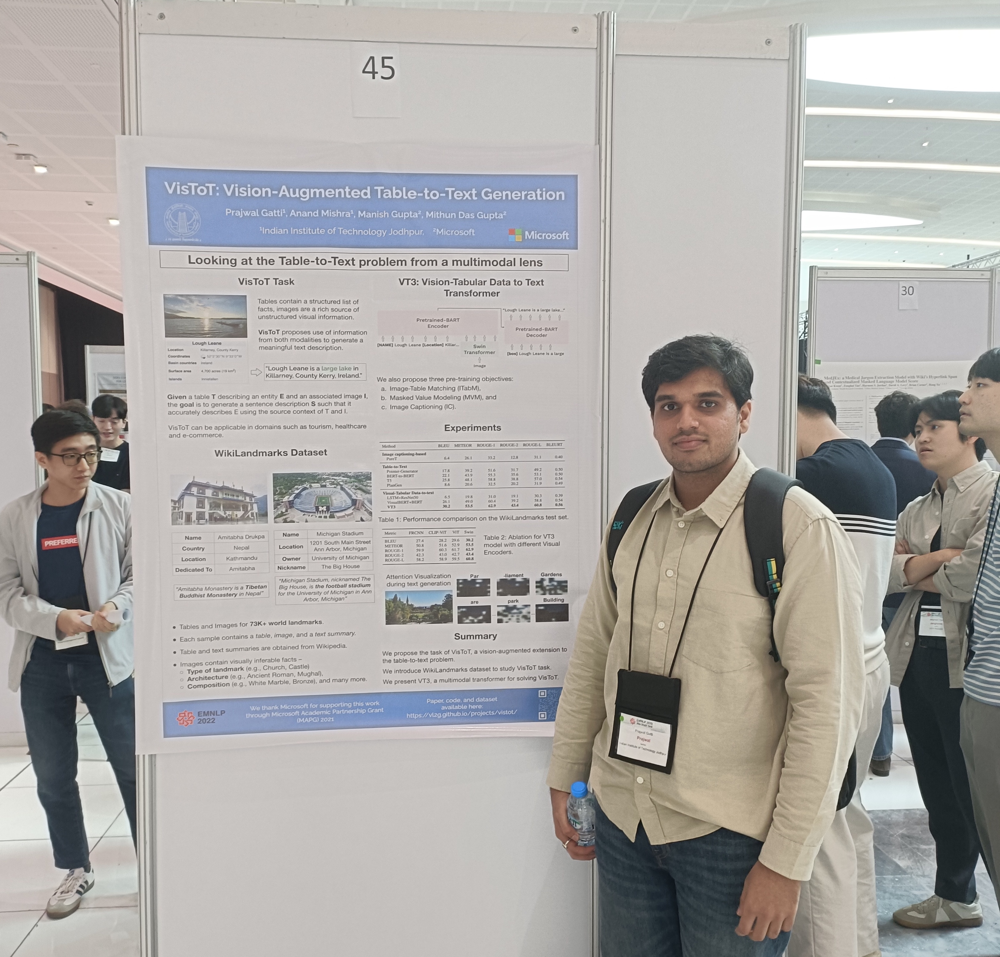
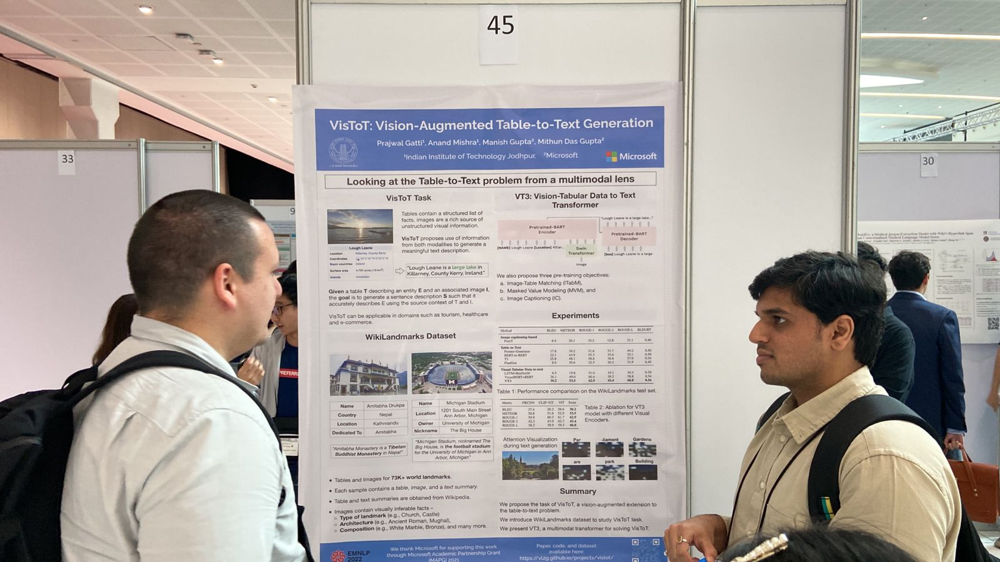
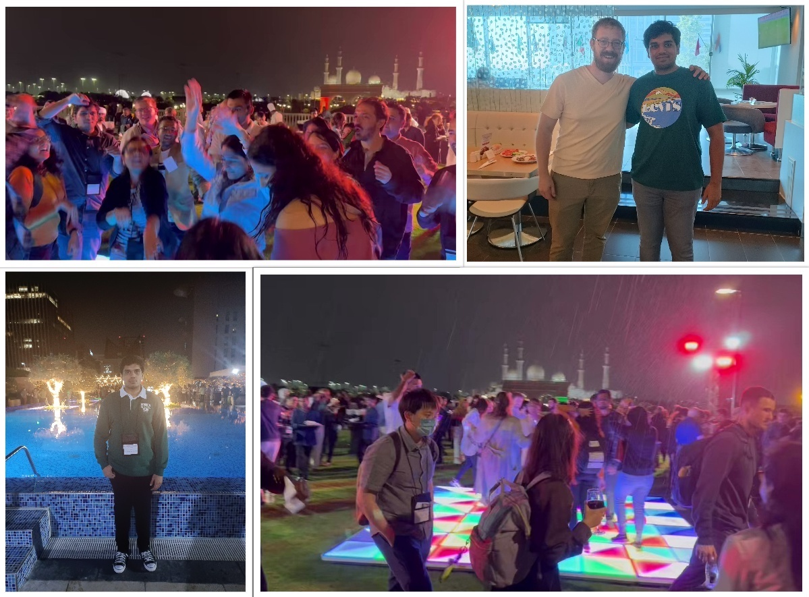

Prajwal’s Experience at the EMNLP 2022 held in Abu Dhabi, UAE
One of the most exciting highlights of 2022 for me was the acceptance of our work “Vision-augmented Table-to-Text Generation (VisToT)” at EMNLP 2022 – a premier NLP conference. To further sweeten this news, I was granted the opportunity to attend the event in person in the wonderful city of Abu Dhabi, UAE, and showcase our research. This marked many firsts for me: my first international conference, my first international travel, and my first in-person presentation. This was an incredible opportunity to learn from and meet with some of the top researchers in the world.

The Conference
The EMNLP 2022 conference took place from December 7-11, 2022, at the Abu Dhabi National Exhibition Centre. It featured a range of captivating keynote speeches, research paper presentations, workshops, and tutorials covering a diverse range of topics in NLP.
The initial two days were dedicated to workshops and tutorials, which I found both engaging and informative. One of my favorite tutorials was "Modular and Parameter-Efficient Fine-Tuning for NLP Models" by Sebastian Ruder. Here, we delved into groundbreaking ideas on the efficiency aspect of NLP. It was nice to gain a deeper understanding of topics such as “The Lottery ticket Hypothesis“ which states that within a large, randomly-initialized neural network, there exists a smaller subnetwork (referred to as a "winning ticket") that, when trained in isolation, can achieve similar or even better performance than the full network.
Following the workshops and tutorials, the main conference activities unfolded over the next three days. Each day commenced with a keynote address, followed by poster sessions and oral presentations from authors. Attending the poster session was personally most exciting for me, as it allowed for more engagement with the authors and their work.
Among the many posters I visited, "How Much Does Attention Actually Attend?" by Hassid et al. caught my interest. The authors replace self-attention matrices with constant (input-independent) matrices in pre-trained language models, such as BERT, while maintaining performance on various NLU benchmarks. I found this fascinating, and I’m curious to see if it could be combined with other efficiency techniques, like network pruning, to further optimize these models for efficiency purposes.
Another noteworthy work was “Neural Theory-of-Mind? On the Limits of Social Intelligence in Large LMs” by Sap et al. This research delved into the social intelligence and Theory-of-Mind capabilities of modern Large Language Models (LLMs). Intriguingly, LLMs have yet to achieve human-like performance on the social intelligence benchmark (SocialIQA) and perform only marginally better than random on the Theory-of-Mind benchmark (TOMI). These findings reveal a promising area for improvement in future LLMs.
My Presentation
On the second day of the main conference, I had the privilege of presenting my research paper on VisToT. As this was my first in-person presentation, I was filled with a combination of excitement and nervousness. To my delight, the presentation was well-received, numerous researchers stopped by my poster, and I had engaging discussions with several of them afterward.

Networking and Social Events
The conference provided a wealth of opportunities for networking and socializing with fellow attendees. Both the welcome reception and social event were enjoyable, creating a relaxed and casual environment for chatting with the conference participants.
I also had a nice time attending a social event hosted by Apple, where I had the pleasure of meeting several machine learning researchers from the company who shared insights about their work. It was nice to see them excited to hear about our research and its possible applications to their domain.
Besides this, I had the opportunity to meet and interact with awesome professors whose work I admire, such as Dan Roth, Kai-Wei Chang, Diyi Yang, and Sameer Singh, which further enriched my conference experience.

Abu Dhabi City
Abu Dhabi is a beautiful city with a rich cultural heritage and modern infrastructure, which provided a stunning backdrop to the conference. During my free time, I ventured to some of the city's most beautiful spots, such as the grand Emirates Palace, the lively Yas Island, and the famous Ferrari World! I tried several delicious local dishes, I loved Shawarma and the many varieties of local tea. It was truly a splendid experience to visit the city.
Conclusion
Overall, the EMNLP 2022 conference proved to be a fantastic experience, enabling me to showcase my research, connect with other NLP researchers, appreciate the local culture, and gain valuable insights into the field’s future. I eagerly look forward to attending EMNLP again in the future and remaining engaged with the research community.
I would like to extend my heartfelt gratitude to my guide, Dr. Anand Mishra, my mentors and co-authors, Dr. Manish Gupta and Dr. Mithun Das Gupta, and to Microsoft and IIT Jodhpur for affording me the opportunity to partake in this extraordinary event. Lastly, a special thanks to my labmates for their awesome support and encouragement in this journey.